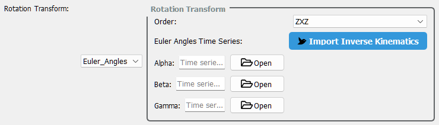

Rotation Transformation#
A rotation transformation modifies the orientation of an object by applying time-dependent or static rotations to its local frame.
Overview#
There are two rotation modes:
Constant: The object retains its original orientation throughout the simulation.
Euler_Angle: A time-dependent rotation using Euler angles. Users can define a rotation sequence (e.g., ZYX) and provide angle sequences (alpha), (beta), and (gamma) via a CSV file. Alternatively, angle sequences can be automatically imported from the Inverse Kinematics module.
{kind=link}

Mathematical Model#
If a rotation transformation is applied, the position vector (mathbf{P}_{B}’) (resulting from translation) is further transformed by the rotation matrix (mathbf{R}_{B}):
The rotation matrix (mathbf{R}_{B}) is defined in terms of three angles (alpha), (beta), and (gamma), representing rotations about the object-local axes (hat{mathbf{b}}_1), (hat{mathbf{b}}_2), and (hat{mathbf{b}}_3), respectively.
In the FlapKine application, the rotation matrix is computed using Euler angles, a widely used method for describing 3D rotations. The rotation is based on a sequence of axis-specific rotations:
where (mathbf{R}_{text{axis}_i}(theta)) denotes the rotation matrix about the axis (text{axis}_i) by angle (theta).
For example, with a rotation sequence of ((X, Y, Z)), the final matrix is:
Customization#
FlapKine supports arbitrary axis sequences like (Z, Y, X) or (X, Y, Z), offering:
Compatibility with different Euler angle conventions
Greater control over rotation modeling
Accurate simulation of flapping-wing kinematics and non-rigid systems
This customization is essential for capturing dynamic orientation changes in flexible bio-inspired mechanisms such as flapping wings.
Usage Notes#
CSV input must include time and the three Euler angles per time step: time, alpha, beta, gamma.
Ensure the rotation sequence matches the physical or experimental configuration.
Euler angles are interpreted in degrees.